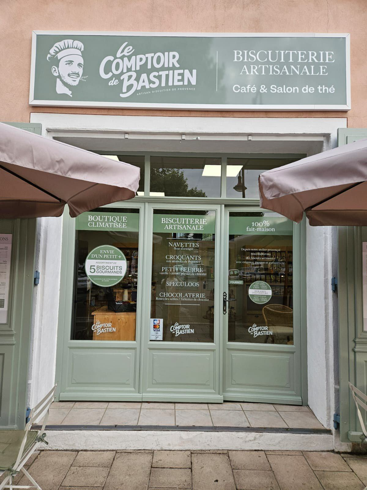

Riez · Alpes-de-Haute-Provence
Biscuiterie, chocolaterie
Découvrir
Biscuiterie, chocolaterie
et salon de thé
Tout est pétri, façonné et cuit dans notre atelier de Saint-Martin-de-Brômes. Petites fournées, façonnage à la main, sans conservateur ajouté.


Les incontournables
Tout voir


L'atelier
Rien ne vient de loin
Nos biscuits et nos chocolats sont élaborés à Saint-Martin-de-Brômes, à quelques minutes de la boutique. La pâte est pétrie puis aplatie à la main, découpée, rangée sur plaque et cuite en petites fournées.
100 % fait maison — de la pâte au sachet, tout se fait à l'atelier
Cuit en petites fournées — des quantités volontairement limitées
Boutique climatisée — et terrasse à l'ombre, place Maxime Javelly
Recettes de Provence — navettes, croquants et spécialités d'ici
Biscuiterie artisanale · 100 % fait maison
- Navettesà la fleur d'oranger
- Croquantsaux amandes de Provence
- Petit beurrevanille · citron · pépites de chocolat
- Speculoosépices douces et cassonade
- Chocolaterieroses des sables · tablettes de chocolat
Ils sont passés nous voir
Tous les avis GoogleUne nouveauté sur Riez qui vaut le coup ! Passez-y, c'est déjà un incontournable ✨ Des biscuits artisanaux de Provence pleins de saveurs 👌 J'ai un faible pour ceux au spéculoos 🤤 J'y reviendrai très vite ! Merci à l'équipe.
Tom B.Avis Google
Super salon de thé à Riez. On peut se poser dans un endroit calme pour savourer de délicieux biscuits faits main par Bastien. J'adore.
A. T.Avis Google
Très beau lieu. Nous avons passé un très bon moment ! J'ai pris un tigré et plusieurs biscuits, c'était délicieux !
Laurie K.Avis Google

La boutique
9 place Maxime Javelly, Riez
OuvertBoutique climatisée et terrasse à l'ombre, ouvert du lundi au samedi, matin et après-midi.
Ouverture prochaine
La boutique en ligne arrive
Nos biscuits et nos chocolats seront bientôt disponibles à la commande, avec retrait à Riez et livraison partout en France.